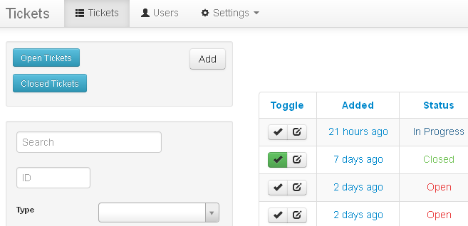

“Tickets” Documentation by “Michael Dale” v4.1.1
Thank you for purchasing Tickets. If you have any questions that are beyond the scope of this help file, please feel free to log a support request via our support portal. Thanks so much!
Table of Contents
- Welcome
- Features
- System Requirements
- Install
- Upgrading
- Release Log
- Developers
- Credits
- License
Welcome - top
Welcome to Tickets.

Tickets is a full featured, yet easy to use help-desk system.
It is great for users and businesses who wish to keep track of and manage support requests online.
You can create multiple users, search tickets, convert POP3 emails into tickets, create custom priorities and much much more.
Tickets has been designed to be easy to install and all config files and database files are created during the install. You simply need a web hosting account and one free MySQL database (no programming is required).
You can easily upgrade to new versions free of charge. All your existing settings, users and tickets are kept intact.
If you have any problems at all please leave a comment here and we will get back to you as quickly as possible.
Tickets has been built around our own custom framework that is used in a number of different public and private applications. It has proven to be stable and secure.
For advanced users or programmers you can create your own plugins to extend the program. Please see the Developers section for a link to the developer pack.
Tickets is designed to be a stand alone web application, you are of course welcome to modify the code, but I cannot support modified code if it breaks.
Whenever I release a new version of Tickets an upgrade script is included (more below), please make sure you keep Tickets up to date.
Please note: If you modify the Tickets code the upgrade script may fail. It will be up to you to fix this if a problem occurs. You must support your own code changes.
Support - top
We have our own support portal that includes a support ticket system, knowledge base and forums, please register here for all support needs.
Dalegroup Support Portal
Features - top
Tickets includes a number of features.
- Easy to use with a clean design
- Full Web Installer
- User Registration
- Ticket Search
- Guest Portal
- File Attachments
- POP3 Downloader (create and reply to tickets via email). Multiple accounts are supported.
- HTML Support
- WYSIWYG Editor
- Departments
- Pushover Notifications
- SMTP Support. Multiple accounts are supported.
- Six User Permission Levels
- Custom Email Notifications
- Custom Priorities
- Custom Status with Custom Colour
- Custom Fields (Text Input, Text Area and Dropdown)
- Mass Open/Close/Delete Tickets
- Gravatar
- Active Directory and LDAP Support
- Update Checker and Auto Upgrader
- Security Logging (plus many more built in security features)
- Plugins Support
System Requirements - top
Tickets is written in PHP5.3 and uses a MySQL5 database. Tickets is a "Web Application" that must be installed on a Web Server.
You must install Tickets on a web host that supports PHP5.3, MySQL5 and Apache.
You may also install Tickets on your personal computer by using one of the many options (i.e google WAMPserver or XAMPP), this is not covered in this document.
The full system requirements can be found below.
- PHP 5.3+
- MySQL 5+ with 1 empty database
- PHP PDO MySQL Extension
- PHP LDAP Exentsion (for Active Directory support)
- PHP GD Exentsion (for anti-spam capture)
- PHP able to write files to the installed directory
- Apache with Rewrite Module
- A Web Browser that supports HTML5/Javascript (IE9+, FireFox, Safari, Chrome)
Install - top
There are a number of steps required to install Tickets.
- Copy the unzipped contents of the zip file to somewhere on your webserver. You can install Tickets in a folder on your existing web hosting or setup a new subdomain.
- Create an empty MySQL database (most hosting provides a control panel that allows you to do this).
- Ensure your PHP install can create files (for config.php to be created during the install).
- Run http://tickets.example.com/install/ from your web browser.
- Follow the steps.
- Backup your MySQL database and user/settings/config.php file.
- Setup a process to visit http://tickets.example.com/cron/ every 5 minutes (more info below in the CRON section).
- Done
Permissions for Install - top
During the Tickets install two files will be created, .htaccess (in the root of the tickets folder) and config.php (in user/settings/).
These files are required for Tickets to function.
If the install fails and is unable to write these files please check the security permissions on the tickets folder on your web server.
On Linux/BSD/MacOS the easiest thing to do is to set the permissions of the entire folder to 777. Once the install has completed we recommend you switch back to 755.
Otherwise you can simply try 755, it depends on your web host.
For information on chmod permissions please see this page.
Upgrading - top
Upgrading is pretty easy.
- Download the latest version of the Tickets zip file
- Backup your MySQL database, config.php file and .htaccess file.
- Backup any custom code or changes you have made (this will be overwritten).
- Unzip the new install onto your local computer.
- Delete the install/ folder.
- Upload this to your existing install of Tickets replacing all existing files.
- Login
- Run the database upgrade from your web browser (run http://tickets.example.com/upgrade/).
CRON Setup - top
The cron system allows Tickets to send and receive emails (and other tasks) in the background. Please ensure this is setup as it is a required task.
There are a number of ways to set this up. The best method is to use a Linux Cron style setup on the server itself. This will be the most reliable method.
Although you can use one of the many free web cron services, these often only work once every 10-15mintes, meaning that emails take longer to send.
Linux Cron
- Type crontab -e in your linux command line.
- Type in the following: */5 * * * * wget -q -O /dev/null "http://tickets.example.com/cron/"
- Save
- crontab -l should now list the cron process
If you do not have access to the command line you might have access to the web hosting control panel that should allow this. Otherwise talk with your webhost.
Windows Scheduled Task
Windows supports the same type of CRON process through the use of a Scheduled Task and a 3rd party wget program.
Wget for Windows
Custom Email Notification Templates - top
Tickets allows you to customise the emails sent to users.
You can use the following fields in your templates.
| Field |
Description |
Available In |
| #SITE_NAME# |
The name of your site. |
New Ticket, New Department Ticket, New Ticket Reply, New Department Ticket Reply, New User |
| #SITE_ADDRESS# |
The URL of your site. |
New Ticket, New Department Ticket, New Ticket Reply, New Department Ticket Reply, New User |
| #TICKET_KEY# |
REQUIRED - Allows Tickets to match emails to tickets. |
New Ticket, New Department Ticket, New Ticket Reply, New Department Ticket Reply |
| #TICKET_SUBJECT# |
The subject of the ticket. |
New Ticket, New Department Ticket, New Ticket Reply, New Department Ticket Reply |
| #TICKET_ID# |
The id of the ticket. |
New Ticket, New Department Ticket, New Ticket Reply, New Department Ticket Reply |
| #TICKET_DESCRIPTION# |
The body of the ticket. |
New Ticket, New Department Ticket, New Ticket Reply, New Department Ticket Reply |
| #TICKET_NOTE_DESCRIPTION# |
The body of the ticket reply. |
New Ticket Reply, New Department Ticket Reply |
| #GUEST_URL# |
An HTML link to access the ticket without login. |
New Ticket, New Department Ticket, New Ticket Reply, New Department Ticket Reply |
| #TICKET_URL# |
An HTML link to access the ticket. |
New Ticket, New Department Ticket, New Ticket Reply, New Department Ticket Reply |
| #TICKET_DEPARTMENT# |
The department that the ticket is in. |
New Ticket, New Department Ticket, New Ticket Reply, New Department Ticket Reply |
| #TICKET_STATUS# |
The status of the ticket. |
New Ticket, New Department Ticket, New Ticket Reply, New Department Ticket Reply |
| #TICKET_PRIORITY# |
The priority of the ticket. |
New Ticket, New Department Ticket, New Ticket Reply, New Department Ticket Reply |
| #TICKET_OWNER_NAME# |
The owner name of the ticket. |
New Ticket, New Department Ticket, New Ticket Reply, New Department Ticket Reply |
| #TICKET_OWNER_EMAIL# |
The owner email of the ticket. |
New Ticket, New Department Ticket, New Ticket Reply, New Department Ticket Reply |
| #TICKET_ASSIGNED_NAME# |
The assigned user full name of the ticket. |
New Ticket, New Department Ticket, New Ticket Reply, New Department Ticket Reply |
| #TICKET_ASSIGNED_EMAIL# |
The assigned user email address of the ticket. |
New Ticket, New Department Ticket, New Ticket Reply, New Department Ticket Reply |
| #USER_FULLNAME# |
The name of the user that the email/account is for. |
New User |
| #USER_NAME# |
The username of the user that the email/account is for. |
New User |
| #USER_PASSWORD# |
The password of the user that the email/account is for. |
New User |
| #USER_EMAIL# |
The email address of the user that the email/account is for. |
New User |
POP3 Download - top
The POP3 download system allows you to use an email address to send and receive tickets.
Although not required we recommend that you use a new POP3 mail account to ensure that only new messages are imported.
The POP3 download system supports multiple accounts. Here is an example setup.
| POP Account |
Department |
Leave Messages (on server) |
Download Files |
Priority |
| accounts@example.com |
Accounts |
Yes |
Yes |
Medium |
| support@example.com |
Support |
No |
Yes |
High |
| sales@example.com |
Sales |
No |
Yes |
Medium |
| sms@example.com |
SMS Notices |
No |
No |
High |
If you have an existing contact form on your website you can simply create a new department in Tickets and POP3 account. Once this is done, setup your contact form to send emails to this new address. Tickets can then download these messages.
User Permissions - top
Tickets includes 6 different user levels/permissions. These permissions allow you to add users with restricted access to features or tickets.
Permissions are global. So if a user is a moderator, they can moderate tickets from any department that they are assigned to.
| Permission |
Features |
Ticket Access |
Use |
| Administrator |
All Features (Profile, Tickets, Tickets Mass Moderate, Users, Settings) |
All Tickets |
This should only be given to technical users that are completely trusted with the system. |
| Global Moderator |
Profile, Tickets, Tickets Mass Moderate |
All Tickets |
Allows access to every ticket in the system. |
| Moderator |
Profile, Tickets, Tickets Mass Moderate |
Add/Edit/Delete/View (all tickets in departments that the user is a member of). |
Department Manager |
| Staff |
Profile, Tickets |
Add/View and basic Edit (all tickets in departments that the user is a member of). |
Support Staff |
| User |
Profile, Tickets |
Add/View and basic Edit (only tickets assigned to or created by the user). |
Contractor |
| Submitter |
Profile, Tickets |
Add/View and basic Edit (only tickets created by the user). |
Client/End User |
Custom Language - top
To create your own language
- Make sure you have a good text editor. On Windows I recommend Notepad++
- Ensure that you use the encoding type UTF-8 without BOM in the text editor.
- Copy system/languages/english_aus.lang.php to user/languages/example.php
- Open the new example.php file in your text editor.
- Change the words on the right hand side to match your language (leaving the left hand side alone).
- When finished save the file and close
- Load Tickets and go to Settings.
- Change the "Default Language" to "Example"
When you make a new language, if you could please send it to me that would be great. I can then include this in future versions for everyone to use.
Release Log - top
Key
+ New Feature
* Bug Fix
- Other Change
Version 4.1.1
- - Performance improvements to tickets index page on larger databases.
- - Upgraded WYSIWYG to Redactor 9.1.8
- - Defaults theme to Bootstrap 3 for users upgrading (standard and bootstrap2 themes are not supported).
- * Fixed bug where CC messages weren't sent when the ticket owner had email notifications switched off.
Version 4.1
This version no longer supports the standard or bootstrap2 theme.
This version no longer supports IE8.
- + File attachments are now included in email notifications.
- + Email subject is now saved & displayed for POP3 downloaded ticket replies.
- + POP3 downloaded email is now saved unmodified in the database (attached to either ticket or ticket reply), for debugging & future use.
- + You can now transfer a ticket to a new department in the private reply area.
- + You can now assign a ticket to a user in the private reply area.
- + You can now search logs.
- + You can now filter logs per user.
- + Email subject is now logged in logs.
- + Name of user is now displayed next to logs.
- + New API calls - Authenticate & Add User.
- + Improvements to custom API calls.
- + Print CSS for view ticket page.
- + Installer has been updated to Bootstrap 3 interface.
- - Some changes to email notification logic. We have more major changes planned for a future version.
- - Ticket Status and Departments are now ordered alphabetically.
- - Turned off autocomplete for username/password on POP3/SMTP add/edit pages.
- - Upgraded WYSIWYG to Redactor 9.1.7
- - Upgraded dropdowns to Select2 3.4.5
- - Upgraded default bootstrap theme to bootstrap 3.0.2.
- - Removed all extra languages (they were out of date and not maintained, we will be releasing a separate zip download containing them).
- * Fixed some PHP notices.
- * Fixed some bugs in email notifications.
- * Fixed some character encoding issues in email subjects when sending notifications.
- * Fixed some character encoding issues in file downloads.
Version 4.0 (not publicly released)
This version no longer supports the standard or bootstrap2 theme.
This version no longer supports IE8.
- + All new Bootstrap 3 interface.
- + When adding a ticket reply you can now select a custom status.
- + You can now create private replies that cannot be seen by submitters.
- + You can now edit and delete ticket replies.
- + You can now unset a specific filter option on the ticket page without clearing the whole search.
- * Fixed Canned Responses from duplicating the existing reply.
- * Some fixes to certain text that couldn't be translated.
- * Fixed Type filter from being reset when changing pages.
- - Moved Merge option to above Delete in the mass change dropdown.
- - Upgraded WYSIWYG to Redactor 9.1.5
- - Upgraded dropdowns to Select2 3.4.3
- - Upgraded jquery to 1.10.2
Version 3.5
This version no longer supports the standard theme.
This version no longer supports IE8.
- + New Theme (sesamo)
- + You can now merge tickets.
- + The system can now auto create users from POP downloaded emails.
- + The system can now auto create users from guest portal tickets.
- + Custom JSON Authentication for use with external systems.
- + You can now use the #TICKET_KEY# token in the subject of email notifications (subject is checked first and then the ticket body).
- + Now displays the number of tickets being shown on the ticket list page.
- + Administrators and Moderators can now delete a ticket directly from the view ticket page.
- + Guests can now download files attached to tickets via the guest portal.
- * Some fixes to certain text that couldn't be translated.
- * Fixed some PHP notices.
- - Reduced the number of notifications sent to the same person when in a department that gets extra notifications.
- - Ticket Status colour is now used for the background and not the text.
- - Minor display improvements to custom fields on view ticket page.
- - Some CSS improvements for smaller screens.
- - Upgraded WYSIWYG to Redactor 9.1.4
- - Upgraded Drop downs to Select2 3.4.2
- - Improved support for future CRM plugin.
Version 3.4
This version is the last version to support the standard theme.
This version no longer supports IE8.
- + Dashboard
- + You can now CC tickets to a list of email addresses (bootstrap theme only).
- + Dropdown select boxes using Select2 now work in the Standard theme.
- - Improvements to the add ticket and guest add ticket pages (bootstrap theme only).
- - Minor improvements to the plugins page (bootstrap theme only).
- - Upgrades to framework and components to support more complex plugins (table access get method now supports custom database joins via plugins).
- - Upgraded WYSIWYG to Redactor 9.0.4
- - Upgraded default bootstrap theme to bootstrap 2.3.2.
- - Upgraded morning bootstrap theme to bootstrap 2.3.2.
- - Upgraded chrome bootstrap theme to bootstrap 2.3.2.
- - HTML Fixes and Improvements
- - Ticket status count on support page (bootstrap theme only).
- - Guest Portal will now auto redirect to the Add Ticket page if no guest portal message/text has been set.
- * Fixed some PHP strict notices.
- * Possible fixes for POP3 downloader importing the same emails if "Leave Message on Server" is enabled (a database option is also available to reject emails with missing message-id headers).
- * Minor bug fixes.
Version 3.3
- + New Bootstrap theme (called Chrome).
- + Canned Responses (setup from Settings -> Tickets).
- * Bug fixes when running in MySQL Strict Mode.
- * Fixed tickets not going into default department if no department selector is visible (and therefore fixes a notification bug).
- * Other minor bug fixes.
- - Upgraded WYSIWYG to Redactor 8.2.6
Version 3.2
- + When adding a new user existing tickets are matched based on the email address.
- + You can now add guest users that cannot login.
- + Ticket filter is now hidden in the mobile bootstrap view with a show button.
- + Ticket search now also searches any replies attached to a ticket.
- + New dropdown select boxes using Select2 (bootstrap themes only).
- + Date user created is now stored and displayed on view user page (all existing users will default to upgrade date).
- + Show Enabled/Disabled buttons for plugins page.
- + You can now upload multiple files at a time.
- + You can now delete a file from a ticket on the edit ticket page.
- + New Modal Popover that allows you to easily transfer/assign/delete a single ticket (bootstrap themes only).
- + iOS icons for home screen.
- - Improved the view user and view ticket page layout.
- - Tickets will automatically set a ticket to open if the user replies to a ticket. This status now only changes if the state of the ticket is currently inactive (e.g. if you have a custom status called "in progress" that is a type of open, then any reply would have set this back to "open", this status will now stay as "in progress").
- - Lots more plugin hooks.
- - Lots of tweaks to improve usage when on a mobile device (when using bootstrap theme).
- - Storage path is now set during install.
- - Upgraded internal date functions to support UTC.
- - Increased the amount of time the database upgrade script can run (needed for very large databases).
- - Upgraded default bootstrap theme to bootstrap 2.3.1.
- - Upgraded morning bootstrap theme to bootstrap 2.3.1.
- - Upgraded HTMLPurifier to version 4.5.0.
- - Upgraded JQuery to 1.9.1.
- - Upgraded JQuery UI to 1.10.1.
- - Upgraded JQuery ColorBox to 1.4.3.
- - Upgraded WYSIWYG to Redactor 8.2.4
Version 3.1
- + Auto Updater System (allows you to upgrade Tickets directly from the web interface).
- + New email notifications (New Department Ticket and New Department Ticket Reply) that allow staff and higher user levels to get notifications when new tickets are created within their assigned departments.
- + You can now set the timezone during the install.
- + More email notifications tokens.
- - More items can now be translated into different languages.
- - Upgraded WYSIWYG to Redactor 8.2.2
- - Show open/closed tickets button for all users.
- - Submitters can no longer edit Status and Priority of a ticket.
- - Full Time/Date of a ticket can be seen when hovering over Added/Updated values.
- - Tweaks and bug fixes.
Version 3.0
- + Two all new bootstrap themes with mobile support.
- + Danish language translation.
- + Theme Switcher.
- + Ticket notes/replies will now display the correct user details if from a non-user.
- + LDAP Authentication Support (tested with OpenLDAP 2.4.31-1ubuntu2)
- + You can now edit Custom Field values on the edit ticket page.
- + JSON API Version 1.0.
- * Fixed time being 1 hour incorrect.
- * Fixed last 6 months function used in report plugin.
- - Improvements to email notifications (Ticket Department, Ticket Status and Ticket Priority can now be used).
- - Upgraded WYSIWYG to Redactor 8.2.1
- - Admins can now directly go to a user from the new ticket page.
Version 2.5
- + Mass Moderate now works with custom status.
- + New plugin hooks for view user page, register user page and tickets view.
- + Auto prune old logs after 100,000 logs (once a week).
- + Auto database optimise (once a month).
- + Ticket will be automatically reopened if a new message is sent to it via POP.
- + Welcome Email when creating new users.
- * Encoding fixes and improvements when downloading emails via POP.
- * Fixes to user dropdown lists when only a single department exists.
- * Fixed Queue bug where emails might not get deleted from the queue.
- - Upgraded WYSIWYG to Redactor 8.1.1
- - Upgraded JQuery to 1.8.2 (if you are running the calendar plugin make sure are using Version 1.1)
- - Stopped spamming the event log with POP3 messages.
Version 2.4.1
- - Upgraded WYSIWYG to Redactor 8.1.0
- * Fixed POP3 download not working on certain installs.
- * Fixed Department delete.
- * Fixed Department member count after a user has been deleted.
Version 2.4
This version includes a large number of code changes to support department permissions. If you are an existing user please test/try 2.4 with a fresh install before upgrading.
- + Departments have had a complete overhaul (permissions and user assignment).
- + Two new permission levels (staff and global moderator).
- + User dropdown lists are now dynamic and correctly list valid users for each department or permission type (i.e you cannot assign a ticket to a submitter).
- + Portuguese Language (thanks to a couple of the users of Tickets for providing this).
Version 2.3
- + Multiple SMTP accounts are now supported.
- + Pushover Notification Support
- + New Logo
- - Installer now does even more checking of the server setup before install can continue.
- - Improved code documentation
- - Other minor tweaks to the system.
- * Workaround for bug in certain PHP versions not allowing login.
- * Fixed some bugs with Timezone support.
Version 2.2
- + Ticket Custom Status (with Colour Picker)
- + Timezone Support
- + When there is more than 1 department all users can select a department on ticket submit.
- + Moderators can now set User and Assigned User when creating a ticket.
- - Upgraded WYSIWYG to Redactor 8.0.3.
- - Improvements to plugin API and documentation.
Version 2.1
- + Ticket Custom Fields
- - Better logging if Active Directory fails when logging in.
- - Installer now does more checking of the server setup before install can continue.
- - Upgraded POP3 library.
- * Fixes to downloading POP3 emails with quoted-printable encoding.
- * Installer now correctly creates .htaccess file for installs that contain a space in the folder.
- * Fixed encoding of certain files that may stop tickets from working after first install.
- * MySQL strict mode fixes when using Active Directory.
- * PHP strict mode fixes.
Version 2.0.2
- * Now installs when MySQL strict mode is enabled.
Version 2.0.1
- - Support for Calendar plugin.
- - Upgraded WYSIWYG to Redactor 8.0.2.
- - Upgraded PHP adLDAP to 4.0.4.
- - Minor improvements to theme system.
- - Minor improvements to documentation and installer.
Version 2.0
- + Guest Portal (allows users to submit and view tickets without needing to login or create an account).
- + Multiple POP3 accounts are now supported.
- + New premium WYSIWYG editor (using the latest Redactor 8.0).
- + Private Messages (between users, moderators and admins. Submitters can receive only)
- + You can now select which department to download POP emails into (set per POP account).
- + You can now disable file downloading from POP email (set per POP account).
- + You can now edit the Email Notifications sent to users for Tickets and Ticket Notes (using the WYSIWYG editor).
- + Tickets can now support different languages (only includes Australian English at this stage, if you can add translations please contact us!).
- + Anti-Spam Captcha (for user registration and guest add ticket pages).
- + You can now search users.
- + You can now filter logs (and paging support).
- - Cleaned up Settings pages.
- - Lots of little interface tweaks.
- - Documentation improvements.
- * Fixed session garbage collection cron task (sessions should now expire correctly).
Version 1.5.1
- + Ticket Email Notifications can now be sent to non-users (enable from POP3 settings).
- * Fixed logic error in certain Email Notifications.
Version 1.5
- + You can now sort by different columns on the tickets view page.
- - Improved Software Update Notifications (can now display release notes and download link directly in the program)
- - Automatically removes magic quotes (if enabled) and unregisters global variables (improves security and increases server support).
- - Minor improvements to plugin API
- - You can now edit the "Email Notification" setting for users.
- - Support for future graph/report plugin.
- * Fixed POP3 bug that caused system to download the same file attachments when "Leave Message on Server" was enabled
- * HTML Fixes and Improvements.
Version 1.4
- + Plugins Support
- + Search by Ticket ID
- + Phone and Address fields for Users
- + Admins and Moderators can now delete a ticket on the ticket edit page.
- - Interface fixes and improvements
Version 1.3.1
- * Fixes to database when storing large tickets.
- * Fixes to timeago class encoding on certain web hosts.
- - HTML Support is now enabled by default.
Version 1.3
- + Mass tickets delete option for moderators and admins.
- - More improvements on POP download and SMTP emails for better results in different email clients.
Version 1.2.1 (not publicly released)
- + Now able to set SMTP Port and TLS (i.e you can now use a gmail account to send messages).
- + Option to Leave Messages on POP server.
- + Support Page
- - Improved plain text email importing when HTML is enabled.
Version 1.2
- + Forgot/Reset Password.
- + HTML Purifier on Message output, Login Message and Logs for increased security.
- * Fixed Ticket Updated Date not always updating
Version 1.1
- + HTML Mode (switches system from plain text to supporting HTML and having a WYSIWYG editor in tickets).
- + Basic Departments (allowing you to better categorise tickets).
- + Improved Search Options (Department, User and Assigned User Filter for Moderator and Administrator).
- + POP3 system can now download files from email (and supports HTML email if enabled).
- + Improved Display on iPhone and Small Screens (using the first version of our responsive css)
- - Database queries improved for increased speed (tested with up to 100,000 tickets).
- * HTML Bug Fixes.
Version 1.0
Developers - top
As of version 1.4 Tickets supports plugins.
You can download the developers pack here.
Plugins - top
As of version 1.4 tickets now supports plugins.
Plugins allow you to extend Tickets without modifying the core code. This means that you can easily distribute extra functionality without requiring users to make any code changes.
Plugins also allow users to upgrade to a new version of Tickets without needing to re-apply code changes.
Plugin Hooks - top
A plugin hook is an area where your plugin can interact with Tickets.
During sections of processing Tickets will call a plugin hook, this is where your plugin comes alive.
The plugin system allows you to add sections to Tickets that look exactly like the built in functionality.
Below is an example of creating a hook.
//get the plugins class
$plugins = &sts\singleton::get('sts\plugins');
//setup a hook
$plugins->add(
array(
'plugin_name' => __CLASS__,
'task_name' => __CLASS__ . 'section_name',
'section' => 'section_name',
'method' => array($this, 'section_name')
)
);
Plugins are stored in the user/plugins/ folder and can be activated from the settings page.
| Section Name |
Area |
Example Use |
Version |
| loader |
Runs at the end of loader.php |
Useful for setting up data after all plugins are loaded. |
1.4+ |
| html_header |
Runs in the HTML head section. |
Useful for loading in extra CSS or Javascript files. |
1.4+ |
| html_header_nav_start |
Runs in the HTML menu section. |
Useful for adding extra menu items. |
1.4+ |
| html_header_nav_settings |
Runs in the HTML settings menu section. |
Useful for adding extra menu items to the settings drop down. |
1.4+ |
| plugin_page_header_* |
Runs before the HTML header in a specific/requested page. |
Visit /p/examplecsslist/ and plugin_page_header_examplecsslist is called. Visit /p/foo/ and plugin_page_header_foo is called.
This section should be used to set the title of new pages (and other page setup) for logged in users.
|
1.4+ |
| plugin_page_body_* |
Runs in the body of a specific/requested page. |
Visit /p/examplecsslist/ and plugin_page_body_examplecsslist is called. Visit /p/foo/ and plugin_page_body_foo is called.
This section should be used to create HTML in the body of the new page. For logged in users.
|
1.4+ |
| public_page_header_* |
Runs before the HTML header in a specific/requested page. |
Visit /public/examplecsslist/ and public_page_header_examplecsslist is called. Visit /public/foo/ and public_page_header_foo is called.
This section should be used to set the title of new pages (and other page setup). For pages that don't require the user to be logged in.
|
1.4+ |
| public_page_body_* |
Runs in the body of a specific/requested page. |
Visit /p/examplecsslist/ and public_page_body_examplecsslist is called. Visit /p/foo/ and public_page_body_foo is called.
This section should be used to create HTML in the body of the new page. For pages that don't require the user to be logged in.
|
1.4+ |
| cron_* |
Runs when a specific cron interval is run. |
Useful for background processing or tasks that need to happen often.
Hooks include: cron_every_five_minutes, cron_every_hour, cron_every_day, cron_every_week and cron_every_month.
|
1.4+ |
| download_other_files |
Runs in /files/download/ when ticket_id isn't set |
Useful for downloading other files.
Use method download_other_files(&$files) and pass an array of files from the storage class.
|
1.5+ |
| view_ticket_details_finish |
Runs in the view ticket page after the ticket details (guest portal included). |
Useful for displaying extra details about a ticket. |
2.2+ |
| view_ticket_user_details_finish |
Runs in the view ticket page after the users details (guest portal included). |
Useful for displaying extra details about a user on the ticket page. |
2.2+ |
| view_ticket_sidebar_finish |
Runs in the view ticket page after all sidebar boxes (guest portal included). |
Useful for adding an extra sidebar box. |
2.2+ |
| profile_content_finish |
Runs after the content on the profile page. |
Useful for adding extra content boxes on the profile page. |
2.2+ |
| auth_logged_in_start |
Runs when "if logged in" is checked in the system. |
Useful when using a custom login system.
|
2.2+ |
| auth_load_start |
Runs when the logged in user is loaded from the database. |
Useful when using a custom login system. |
2.2+ |
| auth_login_start |
Runs when a user logs in. |
Useful when using a custom login system.
An array of the username and password is passed to this hook.
|
2.2+ |
| auth_logout_start |
Runs when the user logs out. |
Useful when using a custom login system. |
2.2+ |
| view_user_sidebar_finish |
Runs on the left side of the view user page. |
Useful for adding extra information or sidebar widgets. |
2.5+ |
| view_user_details_finish |
Runs in the main content box of the view user page. |
Useful for adding extra user data. |
2.5+ |
| submit_register_form_success_before_create_user |
Runs after a user has successfully registered but before the account has been created. |
Useful for validating any extra form fields that have been added. |
2.5+ |
| submit_register_form_success_after_create_user |
Runs after a user has successfully registered and been created. |
Useful for storing any extra form fields. |
2.5+ |
| view_register_sidebar_finish |
Runs on the left side of the view regsiter page. |
Useful for adding extra information or sidebar widgets, or explaining extra form fields. |
2.5+ |
| view_register_form |
Runs in the register form |
Useful for adding extra form fields. |
2.5+ |
| view_user_content_finish |
Runs after all existing user data on the view user page. |
Useful for adding lists or large amounts of extra user data. |
2.5+ |
| view_tickets_content_start |
Runs above the tickets list. |
Useful for adding alerts above the main tickets index view page. |
2.5+ |
| view_tickets_content_finish |
Runs below the tickets list. |
Useful for adding less important information to the tickets index view page. |
2.5+ |
| api_default_action |
Runs when an unknown (custom) api_action is requested. |
Useful for adding custom API calls. |
3.0+ (use api_hook_authenticated_* for 4.1+) |
| api_unauthenticate_action |
Runs when an unauthenticated (custom) api_action is requested. |
Useful for adding custom API calls. |
3.1+ (use api_hook_unauthenticated_* for 4.1+) |
| body_header |
Runs just after the html body is loaded (for every page). |
Useful for adding google analytics etc. |
3.2+ |
| api_hook_authenticated_* |
Runs when an authenticated (custom) api_action is requested. |
Useful for adding custom API calls. |
4.1+ |
| api_hook_unauthenticated_* |
Runs when an unauthenticated (custom) api_action is requested. |
Useful for adding custom API calls. |
4.1+ |
Credits - top
Dalegroup Pty Ltd
- Michael Dale - Lead Developer
- Max Theodore - Usability & Graphics Design
3rd Party Code
A number of MIT, LGPL and other copyrighted libraries and resources have been used in this program. These copyrights remain the property of their owners.
Some of these libraries include
- adLDAP
- POP3 Class
- PHPMailer
- jQuery
- Redactor WYSIWYG Editor
- HTML Purifier
- Delicious (font by exljbris)
If we have missed anything please let us know!
License - top
This program was developed by Dalegroup Pty Ltd and is copyrighted.
THIS SOFTWARE AND THE ACCOMPANYING FILES ARE PROVIDED "AS IS" AND WITHOUT WARRANTIES OF ANY KIND WHETHER EXPRESSED OR IMPLIED.
In no event shall the author or Dalegroup Pty Ltd be held liable for any damages whatsoever, including without limitation, damages for loss of business profits, business interruption, loss of business information, or any other loss arising from the use or inability to use the software.
Your purchase of Tickets allows you to install a SINGLE (one) copy of Tickets on ONE server. You may not resell, distribute or rent Tickets.
Once again, thank you so much for purchasing this web application. As I said at the beginning, I'd be glad to help you if you have any questions relating to Tickets. No guarantees, but I'll do my best to assist.
Michael Dale
Go To Table of Contents